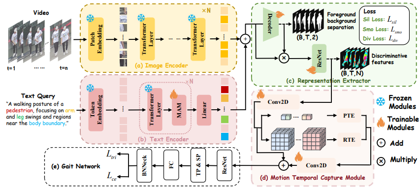
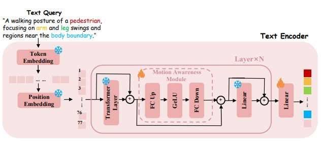
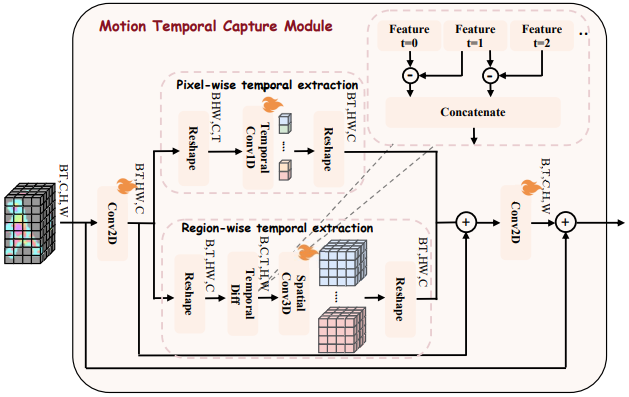

Gait recognition enables remote human identification, but existing methods often use complex architectures to pool image features into sequence-level representations. Such designs can overfit to static noise (e.g., clothing) and miss dynamic motion regions (e.g., arms and legs), making recognition brittle under intra-class variations.
We present LMGait, a Language-guided and Motion-aware framework that introduces natural language descriptions as explicit semantic priors for gait recognition. We leverage designed gait-related language cues to highlight key motion patterns, propose a Motion Awareness Module (MAM) to refine language features for better cross-modal alignment, and introduce a Motion Temporal Capture Module (MTCM) to enhance discriminative gait representations and motion tracking.

We introduce a multimodal gait recognition pipeline that jointly leverages visual observations and language-based semantic priors. By injecting domain-specific motion descriptions into visual feature learning, the model is guided to attend to gait-discriminative body regions, improving robustness under cluttered backgrounds and occlusions.
Instead of treating language features as static prompts, we propose a Motion Awareness Module (MAM) that adaptively refines textual representations based on gait dynamics. This enables the language branch to emphasize motion-relevant semantics while suppressing distractive cues, softly modulating visual features without introducing rigid constraints.
To capture the continuous nature of human walking, we design a Motion Temporal Capture Module that jointly models pixel-level and region-level motion patterns. Benefiting from language-guided visual representations, the temporal module aggregates motion trajectories more effectively, avoiding noise accumulation and enabling stable, discriminative gait modeling over time.


| Representation | Method | Testing Datasets | |||||||||
|---|---|---|---|---|---|---|---|---|---|---|---|
| CCPG | SUSTech1K | ||||||||||
| CL | UP | DN | BG | Mean | NM | CL | UF | NT | Mean | ||
| skeleton | GaitGraph2 (Teepe et al. 2021) | 5.0 | 5.3 | 5.8 | 6.2 | 5.6 | 22.2 | 6.8 | 19.2 | 16.4 | 18.6 |
| Gait-TR (Zhang et al. 2023a) | 15.7 | 18.3 | 18.5 | 17.5 | 17.5 | 33.3 | 21.0 | 34.6 | 23.5 | 30.8 | |
| GPGait (Fu et al. 2023) | 54.8 | 65.6 | 71.6 | 65.4 | 64.2 | 44.0 | 24.3 | 47.0 | 31.8 | 41.4 | |
| SkeletonGait (Fan et al. 2023b) | 40.4 | 48.5 | 53.0 | 61.7 | 50.9 | 55.0 | 24.7 | 52.0 | 43.9 | 50.1 | |
| Silhouette | GaitSet (Chao et al. 2022) | 60.2 | 65.2 | 65.1 | 68.5 | 64.8 | 69.1 | 61.0 | 23.0 | 65.0 | 18.6 |
| GaitBase (Fan et al. 2024) | 71.6 | 75.0 | 76.8 | 78.6 | 75.5 | 81.5 | 49.6 | 76.7 | 25.9 | 76.1 | |
| DeepGaitV2 (Fan et al. 2023a) | 78.6 | 84.8 | 80.7 | 89.2 | 83.3 | 86.5 | 49.2 | 81.9 | 28.0 | 80.9 | |
| SkeletonGait++ (Fan et al. 2023b) | 79.1 | 83.9 | 81.7 | 89.9 | 83.7 | 85.1 | 46.6 | 82.5 | 47.5 | 81.3 | |
| Sil+Parsing+Flow | MultiGait++ (Jin et al. 2024) | 83.9 | 89.0 | 86.0 | 91.5 | 87.6 | 92.0 | 50.4 | 89.1 | 45.1 | 87.4 |
| RGB | GaitEdge (Liang et al. 2022) | 66.9 | 74.0 | 70.6 | 77.1 | 72.7 | - | - | - | - | - |
| BigGait (Ye et al. 2024) | 82.6 | 85.9 | 87.1 | 93.1 | 87.2 | 96.1 | 73.3 | 93.2 | 85.3 | 96.2 | |
| LMGait(ours) | 84.8 | 87.0 | 88.5 | 93.6 | 88.5 | 96.4 | 79.8 | 93.9 | 87.0 | 97.1 | |
@misc{wu2026languageguidedmotionawaregaitrepresentation,
title={Language-Guided and Motion-Aware Gait Representation for Generalizable Recognition},
author={Zhengxian Wu and Chuanrui Zhang and Shenao Jiang and Hangrui Xu and Zirui Liao and Luyuan Zhang and Huaqiu Li and Peng Jiao and Haoqian Wang},
year={2026},
eprint={2601.11931},
archivePrefix={arXiv},
primaryClass={cs.CV},
url={https://arxiv.org/abs/2601.11931},
}